기계조립산업기사 (2002-05-26 기출문제)
1과목: 기계가공법 및 안전관리
1. 베드상의 스윙(swing)을 크게하기 위하여 주축대로 부터 베드의 일부가 분해될 수 있도록 만들어진 선반은?
- 릴리빙 선반
- 터릿 선반
- 갭 선반
- 롤 선반
(정답률: 알수없음)

2. 바이트의 종류를 구조상으로 분류하면 3가지로 분류할 수 있다. 다음 중 이에 해당되지 않는 것은?
- 단체 바이트
- 분해식 바이트
- 날붙이 바이트
- 클램프 바이트
(정답률: 알수없음)
3. 구성 인선의 크기를 좌우하는 인자 중 가장 관계 없는 것은?
- 절삭 속도
- 칩의 두께
- 공구의 상면 경사각
- 공구의 전면 여유각
(정답률: 40%)
4. 칩을 밀어내는 압축력의 축적으로 이런 형태의 칩이 생기고, 유동형 칩이 생기는 것과 같은 재료를, 작은 윗면 경사각으로 깎을 때 생기며, 다듬질면은 그다지 좋지 않은 칩의 형태는?
- 균열형 칩
- 전단형 칩
- 열단형 칩
- 연속형 칩
(정답률: 알수없음)
5. 액체 상태의 기름에 압축 공기를 이용하여 분무(spray)시켜 공급하는 방법으로 고속드릴 및 초고속 베어링의 윤활에 가장 적합한 것은?
- 핸드 오일링 ( hand oiling )
- 드롭 피드 오일링 ( drop feed oilig )
- 오일 미스트 급유법 ( oil mist lubrication)
- 오일링 급유법 ( oil ring lubrication )
(정답률: 알수없음)
6. 선반에서 가로 이송대 나사피치가 8 mm 이고 100등분 눈금이 달려있을 때 30 mm 를 26 mm 로 가공하려면 핸들의 눈금을 몇눈금 돌리면 되는가?
- 20
- 25
- 32
- 50
(정답률: 알수없음)
7. 기어 또는 풀리등의 소재와 같이 구멍이 뚫린 일감의 바깥 원통면이나 옆면을 가공할 때, 구멍에 끼워 선반에서 사용하는 부속품은?
- 방진구
- 맨드릴
- 돌리개
- 면판
(정답률: 알수없음)
8. 그림과 같이 변환기어가 걸려 있는 선반의 어미나사가 4산/인치 이면 깎여지는 나사는 1인치에 몇산이 되는가?
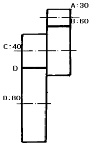
- 12
- 14
- 16
- 18
(정답률: 알수없음)
9. 브라운 샤아프형의 직접 분할법 중 불가능한 분할수는?
- 2
- 3
- 5
- 24
(정답률: 40%)
10. 기어절삭에 사용되는 공구가 아닌 것은?
- 호브(hob)
- 랙 커터(rack cutter)
- 피니언 커터(pinion cutter)
- 혼(hone)
(정답률: 90%)
11. 방전가공에서 전극 재료의 구비 조건이 아닌 것은?
- 가공에 따른 전극의 소모가 적을 것
- 공작물에 대한 안정된 가공을 할 수 있을 것
- 전류의 공급을 충분히 할 것
- 공작물보다 경도가 높을 것
(정답률: 알수없음)
12. HM형 높이게이지를 사용하여 공작물의 평면도를 검사하려고 한다. 필요한 어태치먼트(attachment)는?
- 오프셋형 스크라이버 (offset scriber)
- 깊이바(depth bar)
- 블록게이지( block gauge)
- 다이얼게이지(dial gauge)
(정답률: 알수없음)
13. 아베의 원리에 어긋난 측정기는?
- 나사 마이크로 미터
- V홈 마이크로 미터
- 버니어 캘리퍼스
- 포인트 마이크로 미터
(정답률: 알수없음)
14. 밀링커터를 교환할 때 주의사항이다. 옳은것은?
- 그냥 교환한다.
- 밑에 목재를 깔고 교환한다.
- 밑에 걸레를 깔고 교환한다.
- 밑에 종이를 깔고 교환한다.
(정답률: 알수없음)
15. 소화대책에 관한 안전사항으로 옳지 않은 것은?
- 소화기를 옥외에 설치할 때에는 상자에 넣어 사용한다.
- 화재가 나면 화재 경보를 한다.
- 소화기는 위험하므로 눈에 띄지 않는 곳에 배치한다.
- 화재 발생시는 가스 밸브를 잠그고, 전기 스위치를 끈다.
(정답률: 알수없음)
16. 전동기류에 관한 안전사항으로 옳지 않은 것은?
- 전동기에 습기가 있으면 건조시킨 다음 사용한다.
- 단락장치는 정위치로 확실히 돌려 놓는다.
- 권선형 전동기의 경우, 회전자의 슬립링(slip ring)섭동 부분에 주의한다.
- 전압이 규정값보다 떨어졌을 때에는 부하를 높이도록 한다.
(정답률: 알수없음)
17. 밀링머신을 시동할 때에 점검하지 않아도 되는 사항은?
- 스위치가 정회전 방향으로 놓여 있는가?
- 전류계, 전압계 등에 이상은 없는가?
- 백 래시는 넣어져 있는가?
- 레버나 핸들의 작동은 잘 되는가?
(정답률: 알수없음)
18. 선반 가공에서 마찰을 방지하기 위하여 주어지는 바이트의 각도는?
- 후방 여유각
- 측면 여유각
- 전방각
- 측면각
(정답률: 알수없음)
19. 절삭속도 25 m/min, 밀링커터의 날수 10, 지름 150 ㎜, 1날당 이송을 0.2㎜로 할 때 테이블의 분당 이송량은?
- 106.1 ㎜/min
- 210.5 ㎜/min
- 250.7 ㎜/min
- 298.4 ㎜/min
(정답률: 19%)
20. 글레이징(glazing)에 대한 설명 중 옳지 않은 것은?
- 결합도가 단단한 숫돌은 글레이징을 일으키기 쉽다.
- 점도가 높은 공작액을 사용하면 글레이징이 일어나기 쉽다.
- 절삭깊이가 클 때에는 글레이징이 일어나기 쉽다.
- 결합도가 연한숫돌은 숫돌이 잘 닳아 글레이징을 일으키기 쉽다.
(정답률: 알수없음)
2과목: 기계설계 및 기계재료
21. 해머 사용법으로 적당하지 않은 것은?
- 장갑을 끼고 작업한다.
- 자기 체중에 비례해서 선택한다.
- 처음부터 서서히 타격을 가한다.
- 자기 역량에 맞는 것을 선택해서 사용한다.
(정답률: 알수없음)
22. 직교좌표 X, Y 두축방향으로 각각 2-10㎛의 정밀도로 구멍을 뚫는 보링머신은?
- 수평식 보링머신
- 정밀 보링머신
- 지그 보링머신
- 수직식 보링머신
(정답률: 20%)
23. 드릴작업에서 절삭속도 18m/min, 회전수 115rpm일 때, 드릴의 지름은?
- 35.91mm
- 49.82mm
- 54.73mm
- 68.64mm
(정답률: 알수없음)
24. 선반작업의 테이퍼 절삭장치에서 안내판의 각도 눈금은 깎아야 할 테이퍼의 ( )배로 하여야 한다. ( )안에 적당한 숫자는?
- 1
- 1/3
- 1/2
- 1/4
(정답률: 알수없음)
25. 일감의 바깥둘레를 필요한 수로 등분하거나, 일정한 각도 만큼 일감을 회전시킬 때 쓰이는 밀링 머신의 부속품은?
- 공구대
- 맨드릴
- 분할대
- 방진구
(정답률: 알수없음)
26. 연삭숫돌의 결합도가 높은 것을 사용해야 하는 연삭작업은?
- 단단한 공작물을 가공할 경우
- 숫돌차의 원주 속도가 클 경우
- 접촉면적이 적은 연삭작업일 경우
- 가공표면이 깨끗해야 할 경우
(정답률: 20%)
27. 플레이너 가공에 관한 설명으로 틀린 것은?
- 플레이너 가공에서의 바이트는 일감의 운동방향과 같은 방향으로 연속적으로 이송된다.
- 플레이너 가공의 종류와 절삭방법은 세이퍼의 경우와 거의 같다.
- 플레이너 가공에서 일감은 테이블 위에 고정시키고, 수평 왕복운동을 시킨다.
- 세이퍼에 비하여 큰 일감을 가공하는데 쓰인다.
(정답률: 알수없음)
28. 안전 작업 중 틀린 것은?
- 기계운전 중 정전시에는 스위치를 넣고 기다린다.
- 스위치 주위에는 재료를 놓지 않도록 한다.
- 퓨즈는 규정된 것만을 사용한다.
- 전동기에 절삭유가 스며들지 않도록 한다.
(정답률: 알수없음)
29. 센터리스 연삭기의 장점 중 틀린 것은?
- 숙련이 별로 필요치 않다.
- 연속적인 연삭을 할 수 있다.
- 대형 중량물을 연삭할 수 있다.
- 일감의 공급이 간편하다.
(정답률: 알수없음)
30. 가공면은 매끈하고 방향성이 없으며 가공에 의한 표면 변질부가 극히 적은 가공방법은?
- 호우닝
- 래핑
- 연삭가공
- 슈퍼피니싱
(정답률: 알수없음)
31. Fe-C 평형상태도에서 공석점의 탄소함유량은?
- 0.85 %
- 2.11 %
- 3.21 %
- 4.30 %
(정답률: 20%)
32. 다음 중 하이드로날륨에 대한 설명으로 가장 거리가 먼 항목은?
- Al- Mg계 합금
- 내열성 합금
- 주조용 합금
- 내식성 합금
(정답률: 알수없음)
33. 그림처럼 하중 W를 연결하였을 때 4㎜ 늘어 났다고 한다. 하중 W값은? (단, K1= 50㎏f/㎜, K2=100㎏f/㎜, K3=150㎏f/㎜이다)
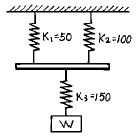
- 400㎏f
- 300㎏f
- 200㎏f
- 1200㎏f
(정답률: 알수없음)
34. 축의 재료와 키이의 재료가 같은 경우, 지름이 50mm인 축에 폭 10mm의 성크키를 설치했을 때 전단으로 키이가 파손되지 않으려면 적당한 키이의 길이는?
- 50mm
- 75mm
- 100mm
- 150mm
(정답률: 알수없음)
35. 저널의 지름 50mm, 저널의 폭=100mm, 베어링 하중이 450㎏f이라면 베어링 압력은 몇 ㎏f/mm2인가?
- 0.09
- 0.12
- 0.18
- 0.21
(정답률: 알수없음)
36. 강판의 두께 t=20mm의 1열 겹치기 리벳조인트의 리벳 지름은 약 몇 mm나 되는가? (단, 강판의 압축강도와 리벳의 전단강도와의 비는 10:7로 한다.)
- 37mm
- 30mm
- 27mm
- 18mm
(정답률: 알수없음)
37. 전단력 2,400㎏f이 작용하는 볼트를 설계할 때, 가장 적당한 나사를 선택하면? (단, 허용전단응력 τ = 8㎏f/mm2 이다)
- M 20
- M 16
- M 25
- M 18
(정답률: 42%)
38. 다음의 V벨트에서 인장강도가 가장 큰 것은?
- M형
- D형
- C형
- E형
(정답률: 알수없음)
39. 밴드 브레이크에서 밴드의 인장쪽 장력이 5000㎏f이고, 밴드의 두께 2㎜, 밴드의 나비 10㎜일때 밴드에 생기는 인장응력은 얼마인가?
- 25㎏f/mm2
- 50㎏f/mm2
- 250㎏f/mm2
- 500㎏f/mm2
(정답률: 알수없음)
40. 내마멸성과 내식성이 좋아야 할 뿐만 아니라, 가공이 쉽고 열팽창 계수가 작아야 하며, 시간의 경과나 환경의 온도 변화에 따른 수축이나 팽창이 적어야 하는 합금강은?
- 쾌삭강
- 고속도강
- 게이지강
- 세라믹공구강
(정답률: 40%)
3과목: 기계제도 및 CNC 공작법
41. 다음 주철의 특징이 아닌 것은?
- 주철을 고온으로 가열했다가 냉각하는 과정을 반복하면 부피는 더욱 팽창한다.
- 주철의 수축률은 0.5-1%정도이다.
- 주철의 부피가 팽창하게 되는 현상을 주철의 성장이라 한다.
- 주철의 성장으로 흑연의 미세화로서 조직을 치밀하지 않게 한다.
(정답률: 알수없음)
42. 로크웰 경도 시험을 할 때 처음 기준하중은 몇 kgf 인가?
- 5
- 10
- 20
- 30
(정답률: 알수없음)
43. 다음 중 도면의 표제란이 아닌 부품란에 기입하는 것은?
- 부품명
- 척도
- 투상법
- 도면 번호
(정답률: 알수없음)
44. KS 기계제도에서 단면의 표시법 설명으로 올바른 것은?
- 훅,축 등의 단면은 절단선의 연장선 위에 표시할 수 없다.
- 핸들의 아암 및 리브의 단면 모양을 도형내에 직접 표시할 경우에는 굵은실선으로 그린다.
- 박판, 형강 등에서 단면이 얇은 경우에는 극히 굵은 실선 1줄로 표시할 수 있다.
- 단면에는 해칭 또는 채색을 할 수 없다.
(정답률: 39%)
45. 경사면에 평행한 별도 투상면을 설정하고 경사면을 실제 모양으로 그려진 투상도를 무엇이라 하는가?
- 정 투상도
- 요점 투상도
- 보조 투상도
- 경사 투상도
(정답률: 알수없음)
46. 축과 구멍의 끼워 맞춤에서 H7g6 는 다음에서 무엇을 뜻하는가?
- 축 기준식 억지끼워맞춤
- 축 기준식 헐거운 끼워맞춤
- 구멍 기준식 억지끼워맞춤
- 구멍 기준식 헐거운 끼워맞춤
(정답률: 알수없음)
47. 다음 기호 중 위치 공차를 나타내는 기호가 아닌 것은?
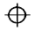
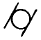
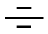
(정답률: 20%)
48. 보기와 같은 면의 지시기호에서 λ C 0.8은 무엇을 나타내는가?
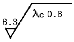
- 커트 오프값
- 최대 높이
- 평균 거칠기
- 기준 길이
(정답률: 알수없음)
49. 베어링 호칭번호 NA 4916 V 의 설명 중 틀린 것은?
- NA 49는 니들 로울러 베어링 치수계열 49
- V 는 리테이너 기호로서 리테이너가 없음
- 베어링 안지름은 80 ㎜
- A 는 시일드 기호
(정답률: 알수없음)
50. 다음 도면과 같은 물체의 비중이 8 일 때 중량은?
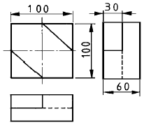
- 3.5 ㎏f
- 4.2 ㎏f
- 4.8 ㎏f
- 5.4 ㎏f
(정답률: 알수없음)
51. 스케치 방법 중 복잡한 조립상태 등의 부품을 여러각도에서 찍어 스케치도 작성시 참고하는 방법으로 가장 적합한 것은?
- 프린트 방법
- 형을 뜨는 방법
- 사진 촬영에 의한 방법
- 직접 측정에 의한 방법
(정답률: 알수없음)
52. 도면에 표시된 재료기호가 SF 34 인 경우 34가 뜻하는 것은?
- 재질 표시
- 탄소 함유량
- 최저 인장 강도
- 제품명 또는 규격명 표시
(정답률: 알수없음)
53. 다음 그림은 제3각법으로 물체를 투상하였을 때의 정면도와 우측면도 이다. 평면도로 가장 적합한 것은?
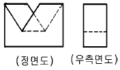
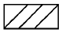
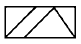
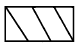
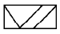
(정답률: 알수없음)
54. 보기와 같은 정면도와 우측면도에 가장 적합한 평면도는?
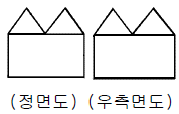
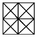
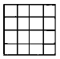
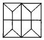
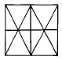
(정답률: 알수없음)
55. 자력선의 성질로서 옳지 않은 것은?
- 자력선은 N극에서 나와 S극에서 끝난다.
- 자력선은 서로 교차한다.
- 자력선에 그은 접선은 그 접점에서의 자계의 방향을 나타낸다.
- 한점의 자력선의 밀도는 그 점의 자계의 세기를 나타낸다.
(정답률: 알수없음)
56. 3상 전동기를 기동시키고자 할 때 험(hum)소리를 내고 기동이 되지 않아 손으로 돌리니 회전하였다. 고장의 원인으로 볼 수 있는 것은?
- 축받이 불량
- 3선간 전압이 같지 않음
- 과부하나 전원전압 강하
- 3선 중 1선의 퓨즈 단선
(정답률: 알수없음)
57. 표준전지가 사용되는 곳으로 가장 적당한 곳은?
- 전위차계에 사용된다.
- 휘이트스토운 브리지의 전원으로 사용한다.
- 검류계의 감도 측정에 사용된다.
- 진공관 전압계의 전원으로 사용된다.
(정답률: 알수없음)
58. 커피의 자동판매기에서는 돈을 넣으면 일정량의 커피가 나온다. 이것은 어떤 제어인가?
- 시퀀스제어
- 폐루프제어
- 피드백제어
- 온.오프제어
(정답률: 59%)
59. 교류전류는 주파수의 증가에 따라 어떻게 되는가?
- 코일에는 잘 흐르나 콘덴서에는 흐르기 곤란해 진다.
- 콘덴서에는 잘 흐르나 코일에는 흐르기 곤란해 진다.
- 코일, 콘덴서 모두 흐르기 곤란해진다.
- 코일, 콘덴서 모두 흐르기 쉬어진다.
(정답률: 알수없음)
60. 어느 도체에 3A의 전류를 1시간 흘렸다. 이동된 전기량은 몇 C 인가?
- 180
- 900
- 10800
- 20800
(정답률: 알수없음)